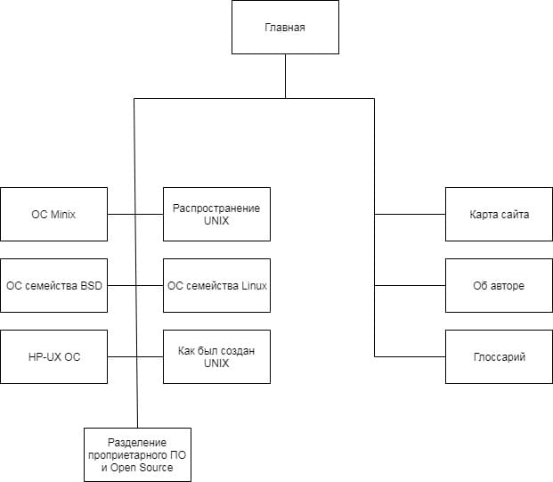

История развития линейки Unix-подобных ОС
О том, что создавали не в Microsoft
Навигация
Как был создан Unix
Распространение Unix
Разделение проприетарного ПО и Open Source
ОС Minix
ОС семейства BSD
ОС семейства Linux
HP-UX ОС
Дополнительно
Глоссарий
Карта сайта
Сведения об авторе
Карта сайта
